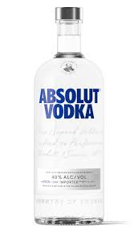

The Royal Vodka

Learn more in Wikipedia
One of the world’s oldest and most popular spirits has taken a long road to get to where it is today.
Learn the history of vodka, from the eighth century to present time.
History
700s - 1900: The Birth of the Conception Spirit
700s:
The story of vodka goes back a long, long way, and its origin is hotly contested. Some believe the first appearance of vodka took place as early as the eighth century in Poland, while others say the ninth century in Russia. Regardless, we do know vodka was created to be something you drank quick and neat, without tasting, primarily for its effect.
Back in its very early days, it wasn’t even distilled. They were developed by making bitter wines and powerful beers, and letting them stand outside overnight in the harsh sub-zero degree winters of Eastern Europe. Because water freezes at a higher temperature than alcohol, the water would rise to the surface and freeze. This could then be skimmed off, leaving behind a stronger spirit. This was repeated until the “wine” reached an ABV strength of around 25 – 35%. This method produced a spirit that was not particularly clean. Because it was full of impurities, it was often flavoured with fresh fruits, herbs and honey to mask the taste.
Types of Vodka
Types of Vodka Explained by Bartenders and Other Drink Experts
- Rye Vodka
- According to Eldefri, vodkas made from grains, such as rye, deliver a spicier character with robust, earthy undertones. It’s generally on the leaner and drier side compared to other types of vodka.
- Fruit Vodka
- In this case, the vodka itself doesn’t come from fruit. The fruity flavor is added after the distillation process
- Many modern brands offer flavored varieties with additions of fruits or herbs infused after distillation
- Corn Vodka
- While corn is a dinnertime favorite for many people, the sweet vegetable is also a popular vodka ingredient
- Corn-based vodkas are renowned for their mellow and slightly sweet profile, coupled with a velvety mouthfeel and notes of vanilla or buttery elements
- Potato Vodka
- Before you ask, no, potato vodka doesn’t taste like french fries or mashed potatoes
- Potato-based vodkas are cherished for their creamy, dense texture, imparting a subtly earthy and nutty flavor
- Molassess Vodka
- For a smooth vodka experience, try a spirit made from molasses
- Molasses-based vodkas, often linked to rum production, offer a slightly sweeter and more intricate taste, featuring hints of molasses and caramel
Far more details on Parade